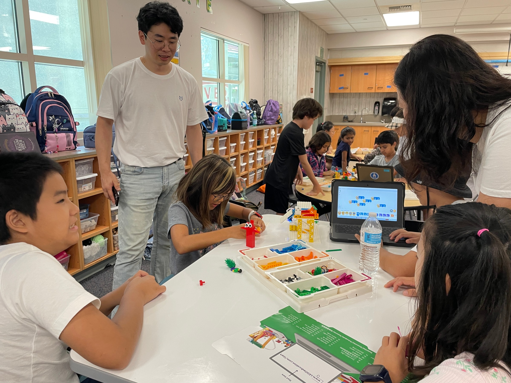

2024 한국 · 폭스러닝센터
서로의 문화를 나누는 친구
한국 학생과 스톤랜치 학생들이 부채 만들기와 태권도, 한국·미국 놀이를 함께했습니다.
표정과 몸짓으로 감정을 알아보고 자신의 경험도 나눴습니다.
FOX 글로벌캠프는 영어로 소통하고,
함께 활동하며 배우는 교육 캠프입니다.
한국에서는 미국 친구들과 문화와 이야기를 나눴습니다.
미국에서는 학교와 가정, 대학에서 사람들을 만났습니다.
지난 캠프에서 만난 사람과 함께한 경험입니다.
2024 한국 · 폭스러닝센터
한국 학생과 스톤랜치 학생들이 부채 만들기와 태권도, 한국·미국 놀이를 함께했습니다.
표정과 몸짓으로 감정을 알아보고 자신의 경험도 나눴습니다.

2024 미국 · 스톤랜치 초등학교
미국 학생들과 한 모둠이 되어 코딩 과제를 완성하며 영어로 설명했습니다.
함께할 일을 정하고 해결하는 과정에서 서로의 생각을 전하고 들었습니다.
지난 미국 캠프에서는 미국 가정의 초대를 받아 함께 저녁을 먹고 홈파티에 참여했습니다.
가족들과 식사하고 이야기를 나누며 미국의 일상을 가까이에서 만났습니다.

2025 미국 · 캘리포니아대학교 어바인
대학을 둘러보고 대학생과 대학 생활·전공 선택에 관한 이야기를 나눴습니다.
어떤 사람이 되고 싶은지 생각하며 진로카드를 작성했습니다.

2025 미국 · 학생 활동 기록
학생들은 정해진 조건 안에서 팀별로 갈 곳을 정하고 맡을 일을 나눴습니다.
캠프 중과 종료 후에 경험을 정리하고 나눴습니다.
함께 세운 계획을 실행하고 돌아보는 과정입니다.
사진은 학생들이 포트폴리오를 작성하는 모습입니다.
영어는 자신의 생각을 전하고 사람과 연결되는 언어입니다.
사회정서학습(SEL)을 바탕으로 감정과 관계를 이해하며 함께하는 방법을 배웁니다.
사전 프로그램에서 캠프에 필요한 영어 표현을 연습합니다.
캠프에서는 연구원이 아이가 대화와 활동에 적극적으로 참여하도록 돕습니다.
월별로 이야기와 질문을 준비하고, 미국에서 써본 뒤 경험을 나누는 과정도 기획하고 있습니다.
내가 소개하고 싶은 것을 고르고 필요한 영어 표현을 연습합니다.
친구와 준비할 일을 정하며 맡을 역할도 나눕니다.
학생·가족과 이야기를 나누고, 함께할 일을 정해 봅니다.
친구의 반응을 들으며 설명과 질문을 바꿔 봅니다.
사진과 글·그림을 보며 경험과 느낌을 나눕니다.
다시 해보고 싶은 일이 생기면 다음 활동으로 이어갑니다.
말·사진·그림 중 편한 방법으로 이야기를 꺼내고, 연구원과 필요한 영어 표현을 함께 준비합니다.
처음에는 나눌 이야기와 소통 연습부터 시작하고, 함께 선택하고 역할을 맡는 경험을 더합니다.
방문할 곳과 만날 사람이 정해지면 그 만남에 맞춰 질문과 표현을 준비합니다.
월별 준비 과정의 일정과 세부 활동은 정해진 뒤 안내합니다.
연구원이 이동·활동·식사를 포함한 모든 일정을 함께합니다.
아이들과 같은 숙소에 머무르며 24시간 캠프 생활을 돌봅니다.